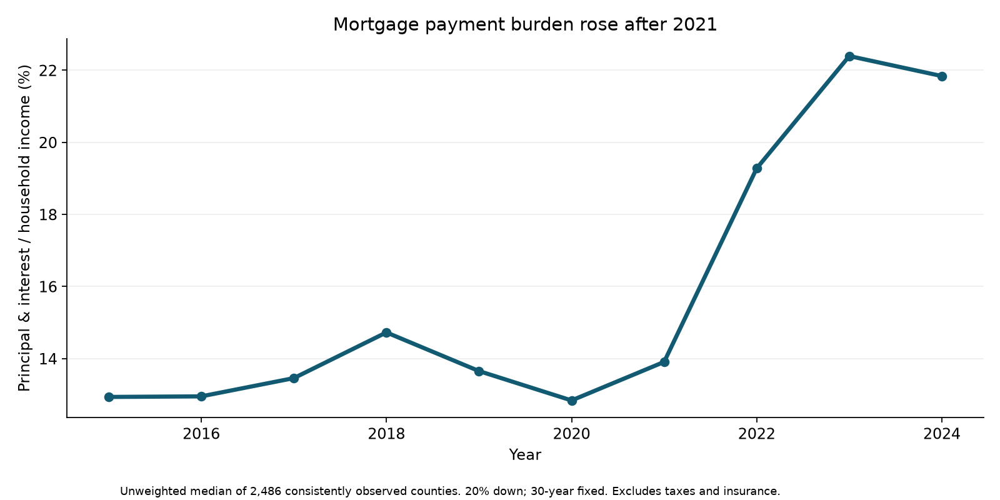
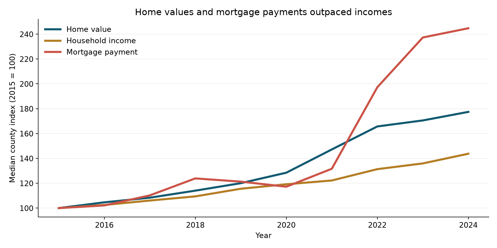

Mortgage & Housing Affordability Analytics
Executive finding
Across 2,486 counties observed consistently from 2015 through 2024, the unweighted median modeled principal-and-interest payment burden rose from 12.9% to 21.8% of median household income, an increase of 8.9 percentage points. The burden increased in 98.95% of these counties. This is a scenario for a new buyer purchasing a typical home, not the actual payment burden of existing homeowners.
Business question
How did changes in typical home values, household incomes and mortgage rates affect the affordability of a new home purchase across U.S. counties?
The intended audience is a housing or mortgage analytics team comparing markets and explaining affordability trends. The project demonstrates source ingestion, missing-data assessment, geographic joins, financial calculations, SQL analysis and interactive communication.
Three findings
- Home values outpaced incomes. The median county's home-value growth was 77.4%, compared with 43.8% income growth during 2015–2024. These are medians of county growth rates, not growth in a national index. Dollar amounts are nominal.
- Financing costs magnified the increase. The mean weekly 30-year mortgage rate increased from 3.85% in 2015 to 6.72% in 2024. The median county's modeled monthly payment grew 144.7%.
- The burden improved slightly in 2024, but remained elevated. The median fell from 22.4% in 2023 to 21.8% in 2024, compared with 12.8% in 2020. This is descriptive, without a statistical significance claim.

How much did prices, rates and incomes contribute?
For each county, change the 2015 price, mortgage rate and income to their 2024 values in all six possible orders. Average each factor's incremental contribution across those orders. This Shapley accounting decomposition distributes the interaction effects symmetrically and reconciles exactly for each county.
| Factor | Mean county contribution |
|---|---|
| Home values | +10.87 percentage points |
| Mortgage rates | +6.14 percentage points |
| Income | −7.39 percentage points |
| Net change | +9.63 percentage points |
These contributions describe the mean of county changes. They do not sum to the 8.9-point change in the median. They are an arithmetic explanation, not evidence that any factor caused a particular housing-market outcome.

Geographic variation
The largest modeled increases in the consistent panel include Nantucket County, Massachusetts (+77.3 points), Pitkin County, Colorado (+56.9) and Teton County, Wyoming (+44.9). These expensive markets illustrate how local home values can be far beyond the purchasing power implied by local median household income. A ratio above 100% is possible in this scenario and is not an observed household expenditure share.
Rankings use point estimates and can be affected by income uncertainty, home mix, seasonal ownership and local buyer composition. They are screening results, not recommendations to lend, invest or relocate. The dashboard exposes all eligible counties by year, while the headline trend uses a fixed panel.
2025 context
Across 2,485 counties from the main panel with complete 2025 housing data, the median county home-value change from 2024 was 2.4%, and modeled payment change was 1.1%. The annual mean mortgage rate was 6.60%. No 2025 income was available in the selected annual source; therefore no 2025 affordability ratio is reported.
Data and method
Housing: the supplied Zillow County ZHVI file contains 3,071 county series. ZHVI is an estimated typical home value, not a median transaction price. The supplied file does not record its download URL or series selection, so its exact property-type and smoothing settings cannot be independently established from the file. Preserve this caveat when presenting it. The source snapshot and SHA-256 checksum are included.
Income: U.S. Census SAIPE county median household income, annual 2015–2024 estimates, with 90% lower and upper confidence limits. SAIPE combines survey and administrative information. It replaces the originally proposed ACS five-year series, allowing annual comparisons across small counties without overlapping five-year windows. The direct ACS API required a key; SAIPE bulk downloads were publicly accessible. No ACS population field is included, and no population weighting is claimed.
Rates: Freddie Mac's weekly 30-year fixed-rate mortgage average, distributed by FRED as MORTGAGE30US. Use the arithmetic mean of the 52 or 53 reported weekly observations in each calendar year. These are national benchmark rates, not county-specific quotes. Freddie Mac changed collection methodology in November 2022, which may affect comparability.
Annualization: require all 12 observed monthly ZHVI values for a county-year, then take their arithmetic mean. Do not impute missing months. The rate and home-value annual averages describe a standardized annual scenario; they are not an average of actual monthly loan originations.
Joins: construct five-character FIPS from the two-digit state and three-digit county codes and join on FIPS plus year. Never match on county name alone. Connecticut's eight legacy county codes do not match Census planning regions in 2022–2024, yielding 24 unmatched county-years. Keep those records in the audit table and exclude them from affordability results. No geographic crosswalk or boundary harmonization is applied. A stable code is not proof of identical boundaries across every vintage.
Coverage: 29,122 eligible county-years in 2015–2024. Exclude 1,564 county-years without all 12 months, plus the 24 complete-housing records without compatible income. The trend panel contains 2,486 counties with all ten eligible years. Results describe that sample, not a population-weighted national affordability estimate. Small and large counties receive equal weight.
Mortgage: loan principal = 0.80 × annual ZHVI. Monthly rate r = annual mortgage rate / 1,200. Monthly payment = principal × r / (1 − (1 + r)^−360). Annual payment burden = monthly payment × 12 / annual median household income. Price-to-income = annual ZHVI / annual median household income. Down payment is 20%, term is 30 years, and only principal and interest are modeled.
Costs omitted: property taxes, homeowners insurance, flood insurance, HOA dues, maintenance, closing costs and the cash constraint of a 20% down payment. This is not a total housing-cost measure, lender qualification test, actual borrower debt-to-income ratio or forecast. Household median income does not necessarily represent prospective buyers.
Uncertainty: the dataset provides burden bounds obtained by dividing the modeled annual payment by the upper/lower income limits. These reflect income uncertainty only and are not a full confidence interval for affordability. Zillow uncertainty and rate dispersion are not modeled. Year-over-year changes and rankings are not tested for significance.
Validation and sensitivity
The pipeline checks unique geographic keys, all 132 study months, weekly rate counts, income-limit ordering, an independent mortgage reference calculation, a 360-payment loan-balance reconciliation and exact decomposition reconciliation. All six delivered SQL queries were executed; SQL panel medians match Python.
| Minimum observed months | Consistent counties | 2015 median burden | 2024 median burden |
|---|---|---|---|
| 10 | 2,513 | 12.94% | 21.87% |
| 11 | 2,505 | 12.94% | 21.85% |
| 12 (main) | 2,486 | 12.93% | 21.84% |
The conclusion is stable under these coverage rules. This checks one modeling choice; it does not remove selection bias or establish representativeness.
Practical implications
Mortgage-market analysis should consider rates alongside home values. A price-only index understates the change in the modeled monthly payment over this period. Market screening should compare affordability with income uncertainty and local conditions, then add taxes, insurance and buyer-specific assumptions before drawing operational conclusions. Income growth offsets some payment pressure, but the modeled offset was smaller than the combined price and rate effects.
Reproduce and extend
Install the dependencies in requirements.txt, place the supplied Zillow snapshot in data/raw, and run python analysis.py from the project folder. Preserved Census and FRED source files enable offline reproduction. Use the notebook for an annotated walkthrough and the SQL file with housing.sqlite for the query results. Read data_dictionary.md for fields, units and eligibility rules. The website is a static data snapshot, not a live feed.
For a later release: confirm the exact Zillow series selection, harmonize county boundaries, add annual population or household weights with the correct denominator, incorporate total ownership costs, and update affordability only after compatible 2025 income is released.
Sources
- Zillow research data and ZHVI
- Census SAIPE annual datasets
- 2024 SAIPE release
- SAIPE file layout
- Freddie Mac mortgage rates via FRED
- Map geometry: us-atlas, Census-derived 2017 boundaries
Retrieved September 12, 2026. Exact download URLs and source hashes are in data/source_manifest.json. Analysis prepared with AI assistance; review and understand the workflow before presenting it as independently completed work.